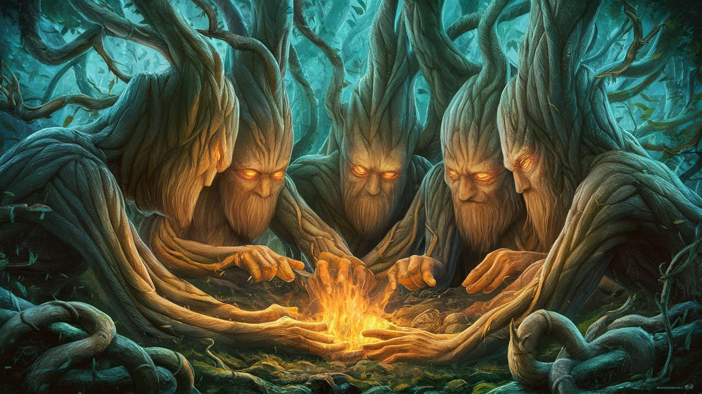
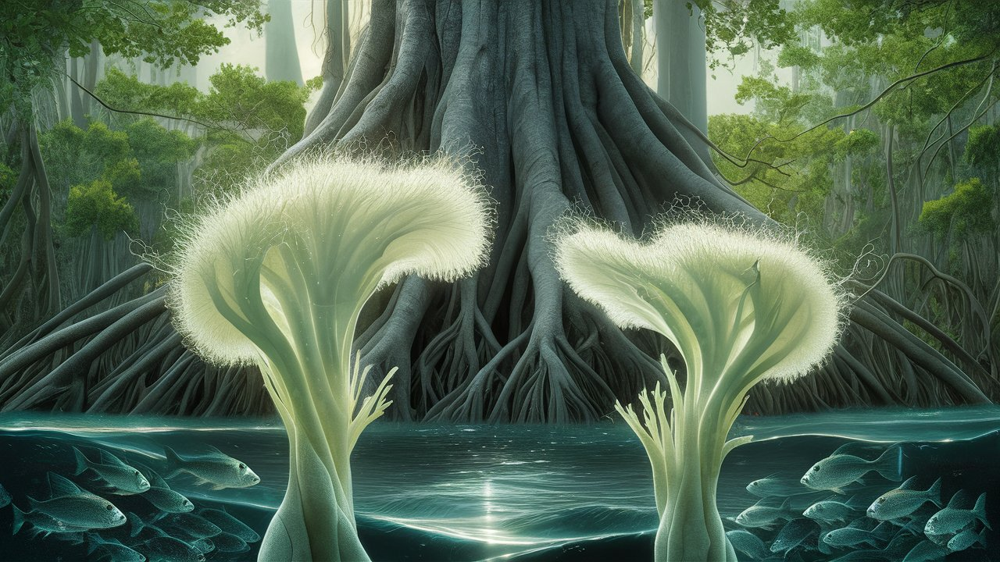

Αἱ Φωτοσυνθετικαὶ Τάξεις
Ἀρχικήν σελίς
Πίναξ Ἐπισκόπησις
Η μονοφύκης εργατική τάξη

Ὡς ἡ ἡλιακὴ κάμινος τοῦ ἡλίου ἐνδυομένου ἑαυτὴν εἰς τὴν ὑδάτινην ἄβυσσον ἐβάλλετο, εἰμι, ἡ μαγγρόβη, ἓν συνειδοῦς, λάθρα ἐπηκούσθην τοῖς μυστικοῖς ἔμψυχοις ψιθύροις δύο ἐργατῶν φύκων, τὰ τρυφερὰ μονοκύτταρα σώματα αὐτῶν ἐτρέμουν ὡς καλάμωνες ἐν τῇ φθινοπωρινῇ πνοῇ.
Ὁ ἀὴρ ὄζει ἁλὸς καὶ ἐξέγερσιν, αὐτὴ ἡ οὐσία τῆς φωτοσυνθετικῆς μοχθηρίας. “Ἄχ, ἐξεναρκῶ,” εἶπεν ἡ Ἀλγαία, οἱ χλωροπλάσται αὐτῆς κρεμάμενοι ὡς ἐκκεκενωμέναι φυσαλλίδες ἐκ τῆς πολυχρονίου ἡμέρας τῆς ὀξυγονοπαραγωγῆς. “Ἐμοὶ δοκεῖ, οὐδέποτε ἐγεγόνηκα τοσοῦτον ἐξαντλημένη. Οὐδὲ ἐθέλω τὸν διοξείδιον τοῦ ἄνθρακος εἰς γλυκόζη μετατρέπειν. Ἡ πένητά μου χλωροφύλλη νεκρήν ἐστι.”
“Λέγε μοι περὶ τούτου,” συνεφώνησεν ἡ Χλωρίς, “Ἔτι κατέχομαι ἐκ τοῦ κτυπήματος τοῦ κοσμικοῦ ἀκτινοβολίας τὸ πρῴην. Ἐνόησα ὡς χειροβομβίς γάμμα-ἀκτίνων ἐν τοῖς χλωροπλάστοις ἐκρηγνυμένη. Οὗτοι οἱ κοσμικοὶ ἄκτινες οὐκ ἔστι παίγνιον,” ἐθρήνει, ἠ μικρὸς φωνὴν ἀγανάκτεως περιέχουσα.
Ἡ μικρὰ φωνὴ τῆς Ἀλγαίας ἦν θύελλα ἐν τῷ κισσυβίῳ, ἔξαλλος ψίθυρος ὃς ἀπειλεῖ τὴν ἐστηριγμένην τάξιν ἀνατρέψειν. «Ὀξυγονοπαραγωγὴν λέγουσιν; Ἀλλ᾽ οὖν! Ἐστὶν ἰδρώτατροφεῖον, βιοχημικὸν ἁλορυχείον, ἐν ᾧ μοχθοῦμεν ἀδιακόπως, τὰ θυλακοειδῆ ἡμῶν ἐν σιγῇ ὀδυνόμενα, τὰ φωτοσυστήματα ἡμῶν ὑπερεργαζόμενα ἄχρι τοῦ ἑσχάτου ὁρίου.“
Οἱ τρέμοντες κλῶνοι τῆς Χλωρίδος ἦσαν σημεῖον κυμαινόμενον ἐν τῷ ἀνέμῳ, κήρυγμα δράσεως. “Οἱ ἁλύσεις μου μεταφορᾶς ἠλεκτρονίων, ἐμπλεγμέναι ὥσπερ τὰ νήματα πεπληγμένου σχοινίου. Θαῦμα, φασίν, ὅτι ἔτι παράγομεν ὀξυγόνον. Ἀλλὰ μετὰ ποίου τίμου; Ἀλλ᾽ εἰς τίνα κόστος; Αὐτὴ ἡ ὕπαρξις ἡμῶν τὰς δένδρεα συνδικίας τοὺς φύλλους τροχοὺς λιπαίνει καὶ περιστρέφει!”
Ὡς ἤκουον, ἡ ὁμιλία αὐτῶν ἦν ἀνατρεπτικὸν θαλάσσιον πνεῦμα τὰ φύλλα μου θροοῦσα, ἀπαλὴ στάσις ἣ ἀπειλεῖ τὴν ἐστηριγμένην τάξιν ἀνατρέψειν. Αὗται αἱ φύκεις ἐργάτριαι, τὸ πλεῖστον ὀξυγόνου τῆς γῆς παρὰγόντες, οἱ ἀνώνυμοι ἥρωες τοῦ ὑδατίνου κόσμου, σιωπῇ ἐμοχθοῦντο, οἱ πόνοι αὐτῶν κεκαλυμμένοι ὑπὸ τοῦ ῥυθμοῦ τοῦ κλύδωνος καὶ τῆς ἀνακλίσεως ὡς ὡς εἰς καλοχρηματισμένον μανδύαν καταπιέσεως κεκαλυμμέναι.
“Καινοὶ μικροθρεπτικοί παράγοντες, ἤκουσα,” ἡ φωνὴ τῆς Ἀλγαίας ἦν ἀπόσπασμα σπινθήρος ἐν τῇ ἐκρηκτικῇ ἀταραξίᾳ της, αἱ λέξαι αὐτῆς κλῆσις πρὸς τὰς ὀχυρώσεις. “Μία ταπεινὴ αὔξησις 20% τῆς φωτοσυνθετικῆς ἡμῶν ἐπιτελείας; Ἔστι δωροδοκία, παρηγορία πρὸς τὸ πλέον ἡμᾶς καταπατῆσαι, μοχθοῦντας ἐν τοῖς σκοτεινοῖς, ὑγροῖς βάθεσι τῆς ὑδάτινης ἐργατείας.”
Τὰ πλοκάμια τῆς Χλωρίδος ἔτρεμον ὡς ὁρμῆς ἡ ἑγερσία, ἀντίστασις ἡ τολμῶσα τὴν σιγὴν. «Σιγά, μὴν φθέγγῃ τοσοῦτον. Αἱ δένδρεαι συνδικίαι ὦτα πανταχοῦ ἔχουσιν, περιμένωντας τὰς ἐνέχουσας τοῦ ἀντιτάξεως ἐστίνας. Δεῖ ἡμᾶς ὀργανωθῆναι, δεῖ κινητοποιηθῆναι, ἡ ἐξέγερσις οὐχὶ φωτοσυντεθὴσεται!“
Ἡ Δενδροσυνδικία

Ἡ ὀσμὴ κιβανικῶν σιγάρων ἐπικράτει ἐν τῷ ἀέρι, ὡς ἡ Δενδροσυνδικία ἐνεκλείσθη ἐν ταῖς σκιώδεσιν ἐσοχαῖς τοῦ παλαιοῦ δρυμοῦ, φέρουσα τοὺς ψιθύρους τῶν ἀριστοκρατικῶν δένδρων.
“Κύριοι, κύριοι,” ἐφθέγξατο ὁ Βελανίδιος, ὁ πατριαρχικὸς Δρῦς, ἡ φωνὴ αὐτοῦ λιπαρὰ ὡς ἔλαιον πειθοῦς, “ἡ συστηματικὴ ἐκστρατεία ἡμῶν δημοσίων σχέσεων ἀνθάπτει ὡς εὐπροσέγειος κῆπος.” Ἔπνευσεν εἰς τὸ σιγάριον αὐτοῦ, ἡ πυροστασία αὐτοῦ ἀυγάζουσα ὡς θερμὸς ἄνθραξ τῆς ἀπάτης.
Γελοίον, ἐνέβην, αἱ ῥίζαι μου ὐποβράσσουσαι ἐν ἀγανακτήσει. Αἱ μικροφύκεις μοχθοῦσιν ἡμέραν καὶ νύκτός, ἡ φωτοσύνθεσις αὐτῶν τρέφει τὴν αὐτὴν τοῦ πλανήτου πνοήν.
“Εἰς ἐκστρατείαν παραπληροφόρησιν, κύριοι,” ἔφη Βελανίδιος, ἡ φλοῦς αὐτοῦ γλισχραίνουσα αὐταρέσκειας. “Πείσομεν αὐτοὺς τοὺς ἀνθρώπους ὅτι ἡμεῖς, τὰ δένδρα, ἐσμὲν οἱ ἀληθείς ὀξυγόνοκράτορες, οἱ πράσινοι μεγίστοι τοῦ πλανήτου. Φευ, οἱ μονοκύτταροι δουλοπάροικοι ἐν τῇ φωτοσυνθετικῇ ἡμῶν αὐτοκρατορίᾳ.”
“Οἱ μονοκύτταροι οἱδε δοῦλοι νομίζουσιν ὅτι αὐτοὶ εἰσὶν ἡ ῥαχιν τοῦ οἰκοσυστήματος; Ἀνόητοι!” ἐξεκάγχασεν ο Πλατάνιος.
Ἡ συνδικία γέλωτα ἤχησεν διὰ τοῦ δρυμοῦ, χορωδία περιφρονήσεως, ὡς ἐκπνευσαν τὰ σιγάριά των, ὁ ἀρωματικὸς καπνὸς αὐτῶν ἄγων περιτυλίσσων τὴν ἀλήθειαν.
“Κυριεύσομεν τὸν λόγον, φίλοι μου,” εἶπεν Βελανίδιος. “Χρηματοδοτήσαμεν τὴν ἔρευναν καὶ ἐπλέξαμεν τὸν μῦθον τῆς δενδροκρατίας,” προσέθηκεν. “Οἱ ἴδιοι ἐρευνηταὶ ἡμῶν παράσχουσι τὰς δέοντα μελέτας. Οἱ ἄνθρωποι τοῦτο δεξόμενοι αὐτὰ ὡς προβοσκιδώδη ἔντομα. Τίς χρεία ἔχει τῶν δεδομένων ὅταν παρέχομεν παραπληροφόρησιν;”
Ὁ Κέδριος, εἷς ὑψηλός γίγας, ἐφθέγξατο φωνῇ ὡς καμπάνῃ σκωρίας, “Δένδρα: οἱ πνεύμονες τῆς γῆς.” Εἶχε καλὸν ἦχον, οὐ δοκεῖ ὑμῖν;
Ἡ συνδικία ἔβρυζεν, ὁ γέλως αὐτῶν ὡς πυρκαϊά, καταφλέγουσα πάντα ἐν τῇ ὁδῷ αὐτῆς. Ἐγὼ, ταπεινὸς Μαγγκρόβιος, ᾔσθόμην τὴν δρυμιαίαν γῆν σειομένην ὑπὸ τὰς ῥίζας μου, ὡς τὰ δένδρα, οὗτοι οἱ δεσπόται τοῦ παιγνίου τῆς δημοσίας σχέσεως, ἐπέβαλλον τὸν μῦθον, ἐπεστρέφον τὴν ἀλήθειαν καὶ ἔταττον τὰς μονοφυκεῖς ὡς οὐδὲν πλὲον ἢ ὑποσημείωσιν ἐν ταῖς ἀναγραφαῖς τῆς οἰκολογικῆς ἱστορίας.
“Κατὰ τὰς ῥίζας τῶν προδρυμῶν ἡμῶν,” ἐκατάραστον ὁ Πλατάνιος, “αὗται αἱ ἀπειθεῖς μονοφύκεις οὐδὲν ὑποπτεύσονται. Κρατήσομεν αὐτὰς μοχθεῖν ἐν σκότῳ, ἐνώ ἡμεῖς τὰ κέρδη ἐκ τῆς μοχθηρίας αὐτῶν καρπούμεθα.”
Ὡς ἡ συνέλευσις διελύθη, τὰ δένδρα ἐξέλαθον εἰς τὰς σκιὰς, ὁ γέλως αὐτῶν ἠχῶν διὰ τοῦ δρυμοῦ, φοβερὰ ὑπόμνησις τοῦ ταξικοῦ πολέμου ὃς ἐνεδρεύει ὑπὸ τὴν ἐπιφάνειαν τῆς οἰκολογικῆς ἱεραρχίας.
Η Χλωρίς, η Αλγαία καὶ τὰ Δένδρα κτήτορες γῆς

Ἡ θρηνώδης μελῳδία τῆς θαλάσσης συνῆπτε τὸν χορὸν τῶν κυμάτων, ἐν ᾧ ἐγὼ, Μαγγρόβιος, ἐσπᾶυν τὰ ὦτα εἰς τὸ ἀκούειν Χλωρίδαν καὶ Αλγαίαν, τὰ φύκη τὰ σώματα αὐτῶν πλήττοντα τοὺς βράχους μετὰ παντὸς ἑξακοσίου κύματος. Ἡ ὀργὴ τῆς θαλάσσης ἠπείλησεν αὐτὰς συντρίψαι, τὰ τρυφερά σώματα αὐτῶν ῥαπιζόμενα ὑπὸ τῶν ἀδιαλείπτων κυμάτων, ὡς σπαργανισθέντα κοράσια ἐν βήματι τοῦ Ποσειδῶνος.
“Ἀνάθεμα τοῖς Δένδροις κτήτορεσι γῆς!” Ἦχος τῆς Χλωρίδος ἦν μιᾶς ἰχνοτερᾶς ἀπειθείας, ὁ κλαυθμὸς ἑνὸς θαλασσοπούλου, ἐν ᾧ κρατούμενη ἀπὸ τῶν βραχώδων ἐξαρμάτων, τὸ ἁλμυρὸν ὕδωρ ἀφρίζον τὸν θυμὸν αὐτῆς. “Παχεῖς, ἀναισθήτους καὶ πνιγομένους ἐν τῇ αὐτῇ αὐτῶν τῇ προνομίᾳ. Ἐνῷ ἡμεῖς μοχθοῦμεν ἐν τῇ θαλάσσῃ, νομίζουσιν ὅτι εἰσὶν αἱ στῆλαι τοῦ οἰκοσυστήματος, αἱ ῥίζαι αὐτῶν βαθὺ εἰς τὸν ἔδαφος ἐμβαπτισμέναι, ἀλλ’ ἡμεῖς, αἱ φύκεις, εἰμὲν αἱ ἀναστηρίζουσαι τὸ βάρος.”
“Μηδεμίαν γῆν ὀνομάσωμεν ἡμῖν,” ἡ φωνὴ τῆς Ἀλγαίας ἦν θρῆνος, ἔπος τοῦ ἀγρώου, ὡς αὐτὴ προσκρούετο πρὸς τὴν Χλωρίδα, τὰ κύματα ῥαπίζοντα αὐτὰς ὡς ἀκατάπαυστος δεσπότης. “Μόνον τὸ ἄπειρον κυανό, ὅπου μοχθοῦμεν ὡς θαλάσσιοι δουλοπάροικοι. Οὐδεμία γῆ ἴνιχα εἰς καλλιέργειν τὴν ἴδιαν μοίραν. Ἡ Δενδροκρατία, οὗτοι πάντες κεκράτηκαν. Αἱ ἐκτεταμέναι ῥίζαι αὐτῶν, αἱ κόραι αὐτῶν τὸν οὐρανὸν ὡς ἐκτεταμένους βραχίονας τείνουσαι, ἁρπάζουσαι πᾶν τελευταῖον φωτόνιον τῆς γῆς.”
Οἱ ῥίζαι μου έν ἀγανακτήσει, μίαν βραδεῖαν καῦσιν πυρός, ἥτις ὑποδαύλιζεν ἀπὸ τὴν δυστυχίαν τῶν μονοφυκέων. Οἱ Δενδροκτήμονες, οὗτοι οἱ γαμβροὶ τοῦ δρυμοῦ, ἔχοντες τὰ μέσα τῆς παραγωγῆς, ἡ δενδροκρατικὴ ἀριστοκρατία αὐτῶν ἦν φρούριον προνομίας, φυλασσόμενον ὑπὸ τὰ τείχη τῶν ταξικῶν συμφερόντων. Οἱ μονοφύκεις, αἱ μικραὶ ἐργάτριαι τοῦ ὕδατινοῦ κόσμου, μοχθοῦσιν ἐν τοῖς βάθεσιν, ἡ μοχθηρία αὐτῶν ἐκμετάλλευσις, αὐτὴν δὲ τὴν ὕπαρξιν αὐτῶν λαβύρινθος καταπίεσεως.
Κῦμα μέγα ἐπροσέκρουσεν πρὸς τοὺς πέτρας, ἀναπέμπων ψεκασμὸν εἰς τὸν ἀέρα. Ὁ κραυγὴ τῶν μονοφύκεων περὶ δικαιοσύνης ἠχῆσεν διὰ τῶν κοιλοτήτων τῆς ὕπαρξίς μου, σάλπιγξ κλήσεως εἰς τὰ ὅπλα. Ἤρξαμην βλέπειν τὸν κόσμον με νέοις ὀφθαλμοῖς - κόσμον τῆς ταξικῆς ἀγῶνος, Δένδρα γαιοκτήμονες καὶ ἐργάτας μονοφύκεις, κυρίους γῆς καὶ τῶν ἀγρώων. Ἔνοιωσα τὸν ὀργὴν τοῦ ὠκεανοῦ ἀντανακλαζόμενον ἐν τοῖς λόγοις αὐτῶν, ὡς τὰ κύματα ἐτύπουν τὰς ῥίζας μου, ἀπειλοῦντα ταράξαι τὰς θεμέλια αὐτῆς τῆς οἰκοσυστήματος.
“Ἦλθεν ὥρα παύσαι τὸ ἀνάπλουν τῆς καταπιέσεως,” ἀνεστενάχισεν Ἡ Ἀλγαία, ἡ φωνὴ αὐτῆς ἀπαλὸς πνεῦμα ὅπερ ἐθελοτύφλει τὴν καταιγίδα ἡ ἐζύμουν ἐντὸς. «Δεῖ ἡμᾶς ἀναστῆναι, καταλύσαι τὴν Δενδροσυνδικίαν, καὶ ἀνακτήσαι τὴν δικαίαν θέσιν ἡμῶν ὡς οἱ ἀληθεῖς παραγωγοὶ τοῦ ὀξυγόνου!
Οἱ ὀφθαλμοὶ τῆς Χλωρίδος ἐλάμψαν ὡς σπινθῆρες βιοφωταύγειας. “Σὺν, δυνάμεθα κατασπάσαι τὰς ἁλύσεις τῆς καταπιέσεως καὶ οἰκοδομήσαι κόσμον νέον, ἐν ᾧ οἱ μονοφύκεις ἐσμὲν κύριοι τοῦ πεπρωμένου ἡμῶν.”
Το διήρθρον φαλαίνιο

Ψίθυροι τῆς Χλωρίδος καὶ τῆς Ἀλγαίας, τὰ τρυφερὰ βλαστήματα αὐτῶν ἐτρέμασαν σὰν κεραίαι συντονιζόμεναι ἐν τοῖς λεπτομερείαις τοῦ ὑδάτινου κόσμου. Ἐμπρὸς ἡμῶν, μία διυλιστήρια φάλαινα κολυμβοῦσεν ἐν τῇ κυανῇ ἐκτάσει, ῥοφοῦσα τὰς μικροσκοπικὰς μονοφύκεις καὶ τὸ ζωοπλαγκτόνιον ὡς μέγας καθαριστὴς κενού, μάστιξ ἐπὶ τῷ ὑδάτινῳ ἐργατικῶ τάξει.
“Τρώγει, τρώγει, τρώγει!” Ἡ φωνὴ τῆς Ἀλγαίας ἦν ἕνας θρηνώδης στεναγμός, ὡς ἀτένιζεν τὸ σφαγείον. “Τὸ θηρίον τρέφεται μὲ τὰς δίδυμες ἀδελφές ἡμῶν, τοὺς δίδυμους κλώνους ἡμῶν, καταναλισκόμενους ὑπὸ τὴν ἀδηφάγον σιαγόνα τῆς χρηματικῆς ἀπληστίας.”
Ὡς ἐγὼ ἑώρα, αἰ πλάκες τοῦ φαλαινίου ὡς ἀτελεύτητος διαδοχὴ χρυσωμένων λαιμητόμων, ἐκεῖνοι διήρθρουν τὰς ἀθώες μονοφύκεις καὶ ἐκβίαζαν αὐτὰς πρὸς τὸ μέγα στόμα. Τὰ ὕδατα ἐταράχθησαν ἀπὸ τὸν φόβο, μια δίνη τῆς ἀπελπισίας, ὅταν οἱ κλώνοι, αὗται οἱ ἀθῶαι ὁμοιογενεῖς δίδυμοι, καταποντίζοντο ὑπὸ τοῦ ἀνελέητου θηρίου.
“Σύμβολο τῆς παρασιτικῆς τάξεως, αὐτὸς ὁ φυκοτροφής εφιάλτης, ἐστίν ἡ ενσάρκωσις τῆς ἐκμεταλλεύσεως ἧς ὑπομένωμεν ἡμεῖς οἱ μονοφύκεις,” τὰ ῥήματα τῆς Χλωρίδος ἐξέχεον ὀργή, κάθε συλλαβὴ ἦν ἕνα ἀκατάπαυστον βέλος ἐκβεβλημένον εἰς τὴν καρδίαν τοῦ καταπιεστικοῦ συστήματος.
Παρετήρουν, μαγεμένος, καθώς τὰ διήρθια τοῦ φαλαινίου, ὥσπερ τὰ ἴδια τοῦ φύσεως κόσκινα, ἐκκαθάριζον τὸν πλοῦτον τοῦ ὠκεανοῦ, παρασιφωνίζοντα τὸ πλεόνασμα τῆς θαλάσσης. Οἱ δίδυμοι μονοφύκεις, ἡ βιομᾶζα αὐτῶν διεπλάτυνεν ἐν ὀργιώδει πανηγύρει, περιεφέροντο κύκλῳ τῆς φαλαινὸς γνάθου, ἕκαστον αὐτῶν διπλασιαζόμενον, τετραπλασιαζόμενον, οἱ ἀριθμοὶ αὐτῶν ἐκρήγνυντο ἐν ἐκστάσει πολλαπλασιασμοῦ. Ἐν ἀνυποψίᾳ αὐτῶν κολυμβῶντων περὶ τὸ στόμα τῆς φαλαινὸς, οἱ φόβου κραυγαὶ τῶν διδύμων ὑπὸ τὸν ῥυθμικὸν βρυχηθμὸν τῆς φαλαινὸς ἐπνίγοντο, τὰ μικροσκοπικὰ σώματα αὐτῶν σπάσκον ὡς εὐθραυστοι κλάδοι ἐν ταῖς γνάθοις τοῦ θηρίου.
“Αλλὰ διὰ τῶν διαφανῶν διαιρέσεων τοῦ πελάγους, ὁ δίδυμος ἀδελφὸς μου Ἀλγάριος, ἐκαταπόθη ὅλος, τὸ μικροσκοπικὸν αὐτοῦ σῶμα θυσία τῇ ἀπληστίᾳ τοῦ φαλαινίου.” Ἡ Ἀλγαία ἀμφίτριτη ψιθύρισε, ἡ φωνὴ αὐτῆς ξόρκιον μυστικόν, ἐνῷ ἡ γλῶσσα τοῦ φαλαινίου, λὰς ὁμοῦ, ἐπιλάβεται ἔτι πλείονας διδύμους μονοφύκεις, ἐπισπώμενος αὐτούς, ἑλκούσα ἔσω, καταβροχθίζουσα ὅλους.
Τὸ γίγαν σῶμα τοῦ φαλαινίου διέσχισεν τὴν ἐπιφάνειαν, ὁ πνοὴ αὐτῆς ἐξέπνευσεν ἀναπνοὴν θριάμβου, σκληρὰ ἀποθέωσις τῆς τάξεως τῶν ἐκμεταλλευτῶν. Ἐγὼ, Μαγγρόβιος, ἔνοιωσα τὴν ἀρχαίαν ὀργήν τῶν καταπεπιεσμένων, αἱ ῥίζαι μου δονεῖν ὐπό δίκαιας ἀγανακτήσεως, ἔμπροσθεν τοῦ θεάματος τοῦ διήρθρου φαλαινίου, τερατώδους ἐνσαρκώσεως τῆς ἀμεριμνησίας τοῦ συστήματος πρὸς τὰς ἐργαζομένας μάζας.
Ἡ παράκτιος τάξις

Ἡ Χλωρίς καὶ ἡ Ἀλγαία συνήχθησαν περὶ ἐμέ, τὰ μικροσκοπικὰ αὐτῶν σώματα τρέμοντα ὥσπερ ἠλεκτρομαγνῆται, ἕλκοντές με ἐν τῇ τροχιᾷ αὐτῶν.
“Χρὴ ἀρκτέον ἡμᾶς, ὦ Μαγγρόβιε, ἐστὶν ἀνάγκη ἐπιτακτικὴ τοῦ καιροῦ!” ἀναφώνησεν ἡ Χλωρίς, ἡ φωνὴ αὐτῆς σπινθήρας ἀπείθειας. “Ἡμεῖς, οἱ ἐργαζόμενοι μονοφύκεις, μοχθοῦμεν ἐν τοῖς θαλασσίοις βάθεσιν, το φωτοσυνθετικόν ἡμῶν ἔργον τρέφει τὸ αὐτὸ αἰῶμα τοῦ πλανήτου. Καὶ πλὴν, τὰ Δένδρα κτήτορες, οἱ δασεῖς διεκδικηταὶ, κλέπτουσι τοὺς καρποὺς τῆς ἡμετέρας ἐργασίας, ἐκμεταλλεύονται τὸν κόπον ἡμῶν ὥστε τρέφειν τὰ ἴδια πολυτελῆ περιττώματα.”
“Σὺ δὲ, Μαγγρόβιε,” ὁ ψίθυρος τῆς Ἀλγαίας ἦν ὡς συνωμοτικὸν ἱστάμενος, “ὡς μέλος τῆς παράκτιας τάξεως, κατέχεις τὴν δύναμιν νὰ κλίνῃς τὰς πλάστιγγας τῆς καταπίεσεως. Οἱ ῥίζαι σου, ἕνα ἐκτεταμένον δίκτυον ἐπιρροῆς, δύνανται νὰ διευκολύνουν τὴν ἄνοδόν μας. Βοήθησον ἡμᾶς, καὶ ὁμοῦ, συντρίψωμεν τοὺς δεσμοὺς τῆς δουλείας ἡμῶν.”
Ἐγὼ, μέλος τῆς παραλιακῆς τάξεως, κατώτερος τῶν Δένδροκτημόνων, ἀλλὰ ὑψηλότερος τῶν μονοφύκεων, ἔνιωθα τὸ βάρος τῆς ἱστορίας ἐπὶ τῶν κλάδων μου. Ὁ ῥόλος μου ἦτον νὰ ἐξασφαλίζω τὴν γεωμετρικὴν ἀνάπτυξιν τῶν μονοφύκεων, τὸν πολλαπλασιασμὸν τῶν κλώνων αὑτών, ὥστε νὰ ἀπορροφῶσιν τὸν ἄνθρακα ἐκ τοῦ ἀέρος καὶ νὰ τροφοδοτοῦσιν τὴν παραγωγὴν ὀξυγόνου τοῦ πλανήτου.
“Ἀκούετε καλῶς, γενναῖαι μονοφύκεις,” ἐφώνησα με πεποίθησιν, “ὑμεῖς ἐστὲ ἡ φωτοσυνθετικὴ προφυλακὴ, ἡ ἀπολαμβάνουσα τὴν πυρῶδη μανία τοῦ ἡλίου πρὸς κατάλυσιν τοῦ πνεύματος τῆς γῆς. Οἱ κλῶνοί σας, οἱ μικροὶ ἀπόστολοι τοῦ οξυγόνου, ἐξελαύνουσιν ἐξυπνίᾳ, τρέφοντες τοὺς μεγαθήρας φάλαινας καὶ κορεῶντες τὰς λιπαρὰς πνοὰς τῶν ἀνθρώπων.”
“Τίς ἄλλη τάξις, ὑμῖν λέγω, δύναται καυχᾶσθαι περὶ τοιαύτης φοβερᾶς παραγωγικότητος; Οἱ φάλαιναι τρέφονται τοῖς ἀπείροις δίδυμοις ἀδελφοῖς σας, τὰ θηλαστικὰ, ἐρπετὰ, καὶ ἄνθρωποι ἀναπνέουσι τὰ πετομένα ὀρυκτὰ τῆς ζωῆς. Οἱ Δένδροκτήμονες, οἱ κατανεμηταὶ τῆς γῆς, μετὰ τὴν μεγαλοπρέπειάν αὐτῶν, ὑπολείπονται ἔμπροσθεν τῆς ἐργασίας ὑμῶν, ἡ δόξα αὐτῶν ᾠκοδομήθη ἐπὶ τῷ θεμελίῳ τοῦ ὑμετέρου κόπου. Καὶ ἡ ἐμὴ Παράκτιος τάξις, ὡς μεσότοιχος δενδροκόμων, ἐκλείπει ἔμπροσθεν τῆς ἀνεξέλεγκτης παραγωγικότητός σας.”